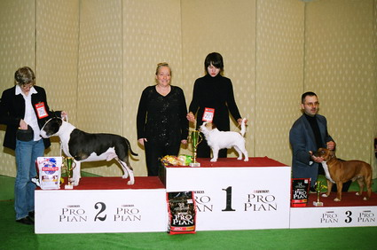
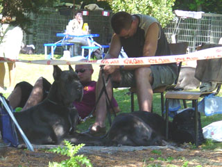
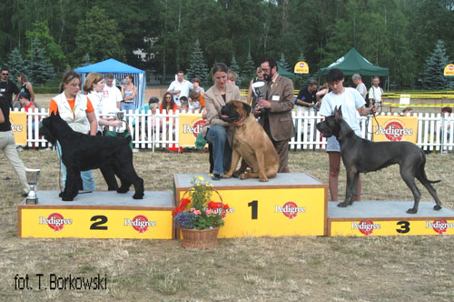
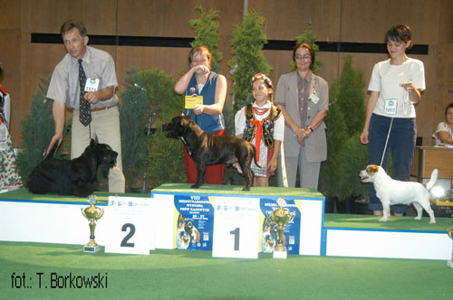

10-11.12.2005 - National dog show in Nowy Dwór Maz. - FOR PLEASURE of the Hunters Pride - CWC, BOS, BOB i BOG !!!QUIXOTE - CWC, BOS
NO DOUBT - I very promissing
02.10.2005 - National dog show in Nowy Dwór Maz. - YACUZA Balao - CAC, BOS, BOB.
23.09.2005 - ANDA passed away. She was wonderful dog. We miss her so much...
 19.09.2005 - Great Danes Club Show in £ódŸ. OH MY
DARLING was first on her class and got CWC
19.09.2005 - Great Danes Club Show in £ódŸ. OH MY
DARLING was first on her class and got CWC

04.09.2005 - Poigny la Foret - National d'elevage - First time in France. Both our dogs got excellent notes. Pepe was third on his class.
09 - 10.07.05 - International dog show in Warsaw.OH MY DARLING Balao - CAC, CACIB, BOB and III place on BOG
20-21.08.2005 - Bratislava - 3 x CAC, 2 x Res.Cacib, 1 x CACIB

26.06.05 - International dog show in KrakowFOR PLEASURE of the Hunters Pride - CWC, CACIB, BOB
and III place on BOG !!!
15.06.2005 - CZEJEN has left us and flied to the angels. He spend with us ten lovely years.
04.06.05 - European dog show in Tulln. OH MY DARLING Balao - CAC.
 05.05.05 - VENDETTA becomes a mother of litter "B" BALAO - 2/3
05.05.05 - VENDETTA becomes a mother of litter "B" BALAO - 2/3
 30.04-01.05.2005 - Very lucky days. On Saturday FOR PLEASURE has got BOB.
30.04-01.05.2005 - Very lucky days. On Saturday FOR PLEASURE has got BOB.On Sunday QUIXOTE has got CAC and CACIB.
 17.04.2005 - Terrier Club Show. FOR PLEASURE of the Hunters Pride & YACUZA Balao -
Junior Club Winners. WHOOPIE has finished Polish Championship.
17.04.2005 - Terrier Club Show. FOR PLEASURE of the Hunters Pride & YACUZA Balao -
Junior Club Winners. WHOOPIE has finished Polish Championship.
 10.03.2005 - QUIXOTE becomes a father. JAGA gave birth to 8 lovely little
danes. We've 5 males and 3 females.
10.03.2005 - QUIXOTE becomes a father. JAGA gave birth to 8 lovely little
danes. We've 5 males and 3 females.
 05.03.2005 - VERY lucky day !
05.03.2005 - VERY lucky day !OH MY DARLING on her first & how has got CAC & CACIB - Lithuanian Winner.
Also HEKSA made us nice surrprise, she becomes a proud mother of 9 healthy puppies. In litter "A" we've
3 males and 6 females.
 18.02.2005 - First litter in this year. The parents of litter "Z" are : Glen & Whoopie.
On her first litter there are 6 puppies.
18.02.2005 - First litter in this year. The parents of litter "Z" are : Glen & Whoopie.
On her first litter there are 6 puppies.